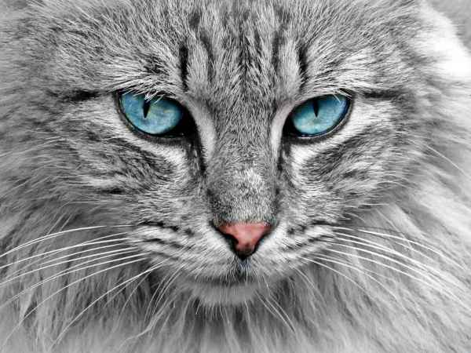
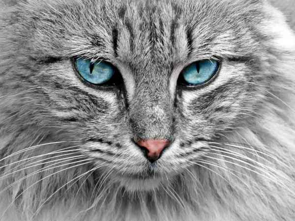
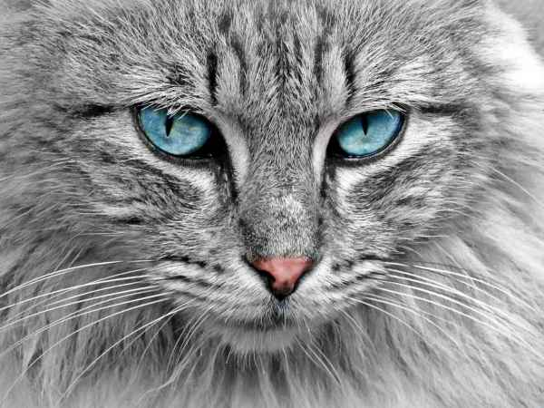

Images
“Other than primates, the cat-human comparison is one of the closest you can get,” in terms of genome organization ...
 


“Other than primates, the cat-human comparison is one of the closest you can get,” in terms of genome organization ...
